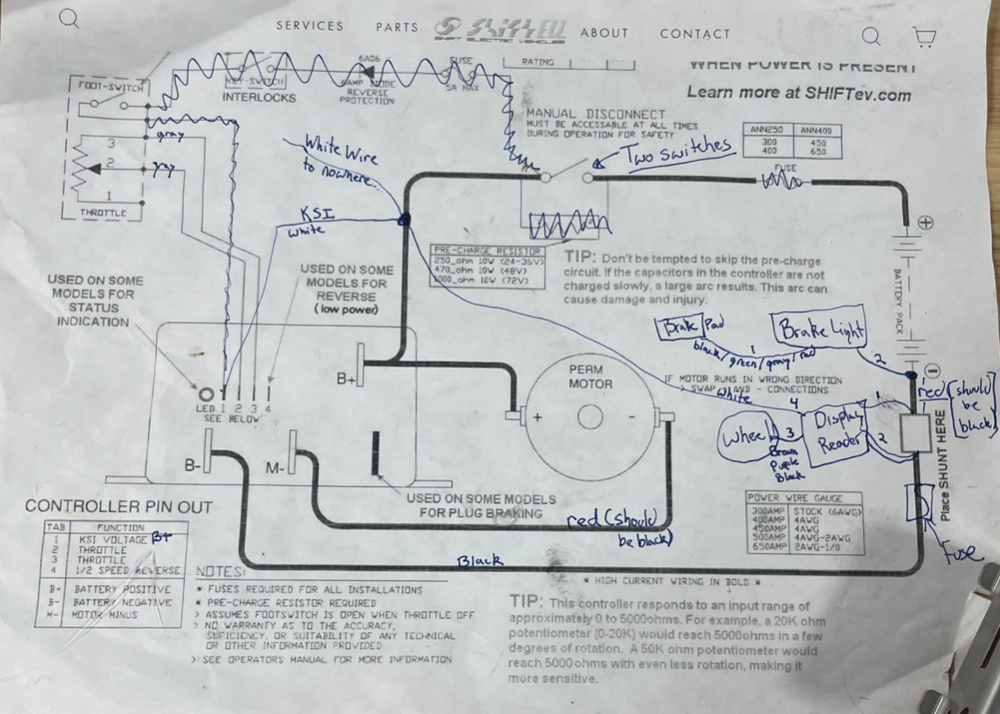

Our team won 3rd place
in the Novice Division at the 2023 Lime Rock Park Electrathon Competition
Background
We built an electric vehicle from scratch for an endurance competition, developing a car that could go the most distance in an hour.
Important Components
Two 12V Yellow Top Optima lead-acid batteries, providing a total voltage of 24V for high specific energy
Alltrax Motor Controller
DC Motor with 2800 RPM
Bicycle Disc Brakes
Tools Used
Fusion 360 & 3D Printer to design and print parts that protected the electrical components and connected awkward pieces such as the mirrors and fan
Soldering iron to connect electronics
Hot glue gun, string, and tape to connect parts to the chassis
Digital multimeter to measure voltage, current, and resistance at different parts of the circuit
Process
While originally tasked with developing the foundations of the vehicle including the chassis, mirrors, throttle, brakes, steering wheel, and chair,
I ran into problems with the electrical system.
Seeing this challenge would eventually need to be overcome,
I spearheaded the development of the circuit design. The given schematic for the motor controller appeared to be incorrect,
so I researched, tested, and implemented my own adaptation inspired by the original to power the vehicle.

Circuit
The simplest loop in the circuit was connecting the controller pins to the potentiometer that controls the throttle as shown in the original schematic.
The rest of the circuit was not as easy, and we could never produce power to rotate the motor sprocket following the original.
So, I continuously redesigned and tested the schematic until I found my final design, as shown above, that incorporated a brake light and display monitor.
Once the vehicle was able to run, we focused on perfecting the other aspects.
Calculations
For the endurance aspect of the competition, we looked to maximize our performance by analyzing the weight and energy cost of the vehicle.
The competition required that the minimum weight of the driver with additional weight to the vehicle must be 80kg.
Since both drivers were under 80kg, we stacked our motor, batteries, and all the electronics in the back and added our ballast to the front.
This distribution proved advantageous, allowing the vehicle to better climb the hills in the course.
We stayed around 30-40mph throughout the entire race to conserve energy and maintain a relatively fast speed.
We used more energy to climb hills and on the straight-aways than while turning or descending.
I measured the center-to-center distance between the motor and wheel to be about 16", ensuring little slack with the gear chain.
Through online research, I determined a 6:1 motor-to-sprocket ratio to be most efficient for the endurance, turns, and hills of the competition.